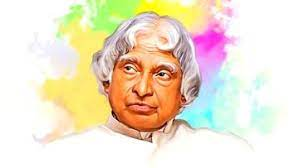

Avul Pakir Jainulabdeen Abdul Kalam (15 October 1931 - 27 July 2015) was an
Indian aerospace scientist and statesman who served as the 11th President of India from 2002 to 2007. He was
born and raised in Rameswaram, Tamil Nadu and studied physics and aerospace engineering. He spent the next
four decades as a scientist and science administrator, mainly at the Defence Research and Development
Organisation (DRDO) and Indian Space Research Organisation (ISRO) and was intimately involved in India's
civilian space programme and military missile development efforts. He thus came to be known as the
Missile Man of India for his work on the development of ballistic missile and launch vehicle
technology.He also played a pivotal organisational, technical, and political role in India's
Pokhran-II nuclear tests in 1998, the first since the original nuclear test by India in 1974.
Kalam was elected as the 11th president of India in 2002 with the support of both the ruling Bharatiya
Janata Party and the then-opposition Indian National Congress. Widely referred to as the "People's
President", he returned to his civilian life of education, writing and public service after a single
term. He was a recipient of several prestigious awards, including the Bharat Ratna, India's highest civilian
honour.
While delivering a lecture at the Indian Institute of Management Shillong, Kalam collapsed and died from an
apparent cardiac arrest on 27 July 2015, aged 83. Thousands, including national-level dignitaries,
attended the funeral ceremony held in his hometown of Rameswaram, where he was buried with full state
honours.
